Baseline d14d275. Scope: Library Home/results presentation and search preference defaults. No Score/footer, navigation, harmony, catalog, Lists/Files implementation, playback, or Lyrics-theme changes.
Both Library headers have the existing diagonal light/dark swatch at top-right in a 44px button. One shared preference, music-transpose-library-theme-v1, stores light or dark, with light as default. The title and accessible label announce the next action; aria-pressed exposes dark state. Enter/Space and visible focus work. The MusicTranspose gradient remains, and the results header stays 44px, identical to baseline.
Dark colors: charcoal page #151f29, rows #202d38, panels #263642, near-white primary #edf3f7, muted metadata #b7c9d7, borders #465b6c, restrained blue active states. Source groups retain muted blue/teal/green gradients. Search, selected Favorites, current row, unavailable rows, Library menus and Lists/Files quick links receive scoped colors. CSS is screen-only; the root/body canvas changes only while Library Home/results are visible. Score, Lyrics, Lists, Files and external dialogs retain their styling.
Initial HTML and fresh JavaScript default to Title + Page; Lyrics is unchecked. Placeholder: Search music…. music-transpose-search-fields-v2 stores choices. A missing legacy preference or all-three v1 selection migrates to Title/Page; every other valid v1 combination is preserved. Migration writes v2 once. Later all-three choices remain intact. Old session/history snapshots cannot reinstate the old default; new contexts are versioned. At least one field must stay enabled. Title, page and opt-in lyrics search all pass.
node tests/library-theme-preferences.mjs: all seven legacy field combinations plus missing preference, storage failure, deterministic field matching; WebKit phone 390/430 and Chromium 820/1024/1440; light default, Home dark/results dark, results light/Home light, persisted themes/fields, keyboard activation, menu bounds, 44px targets, header collision and overflow checks, Title/Page/Lyrics searches, last-field guard, separate surface/print styles. No page errors.
node tests/library-theme-scope.mjs: baseline header height comparison, three dark menus, stale v1 history/session migration, and actual Score opening/theme independence. JavaScript syntax checks and git diff --check passed. Screenshots below include both surfaces/themes at 390/430/820/1440. No broad application suites run.
index.html, library.js, library-search.js, new library-theme.js, styles.css, sw.js (v220), tests/library-theme-preferences.mjs, tests/library-theme-scope.mjs, this report, library-theme-results.json and screenshot folder. Existing untracked diagnostics remain untouched.
Commit/deployment result is reported in the delivery message. Physical iPhone/iPad confirmation is still needed for dark-room contrast, comfortable tapping and the visual feel of the header swatch. Browser emulation is not physical-device approval. The deferred iPhone Score-footer issue was not investigated or changed.
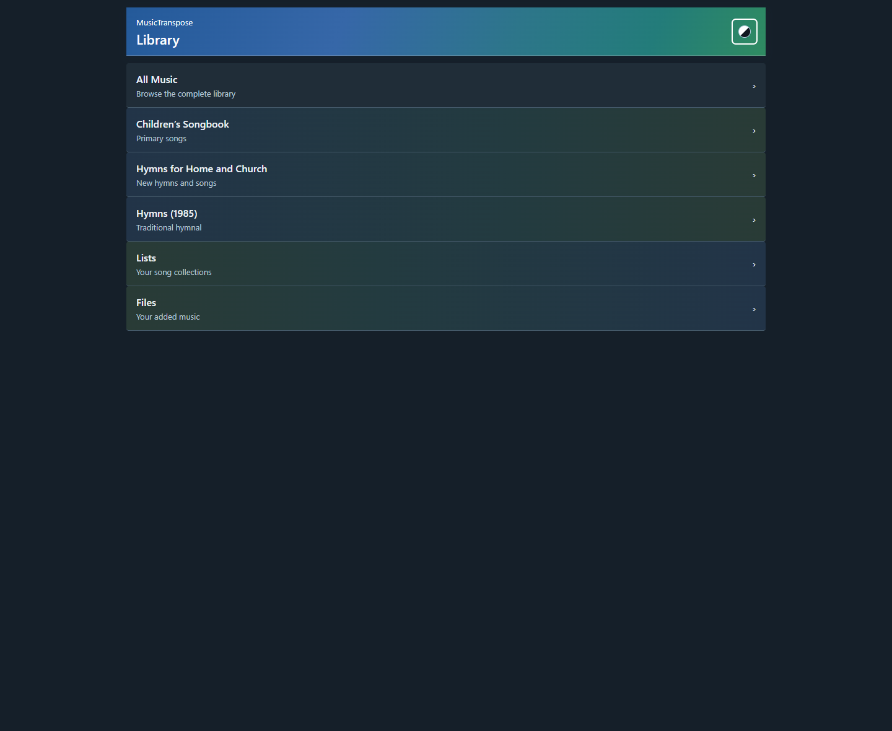
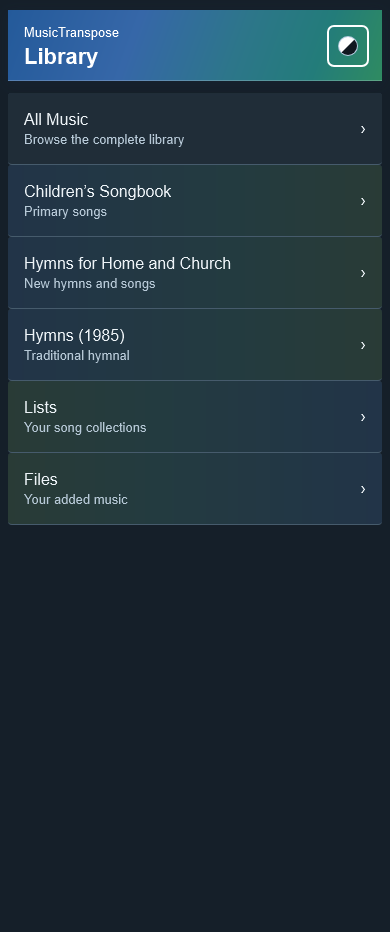
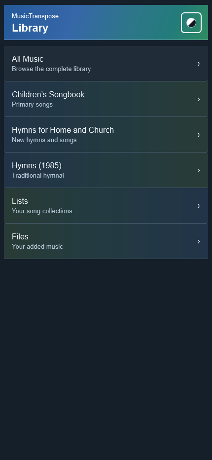
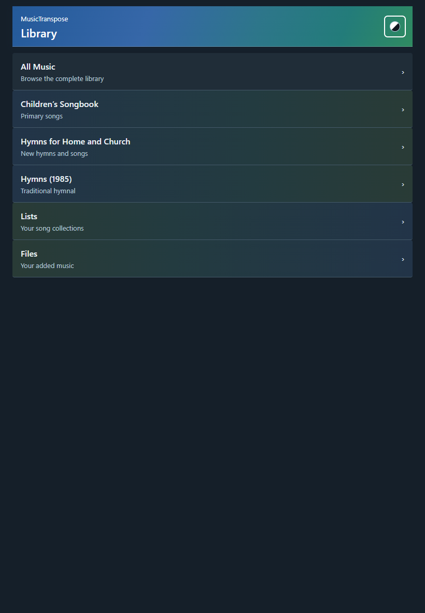
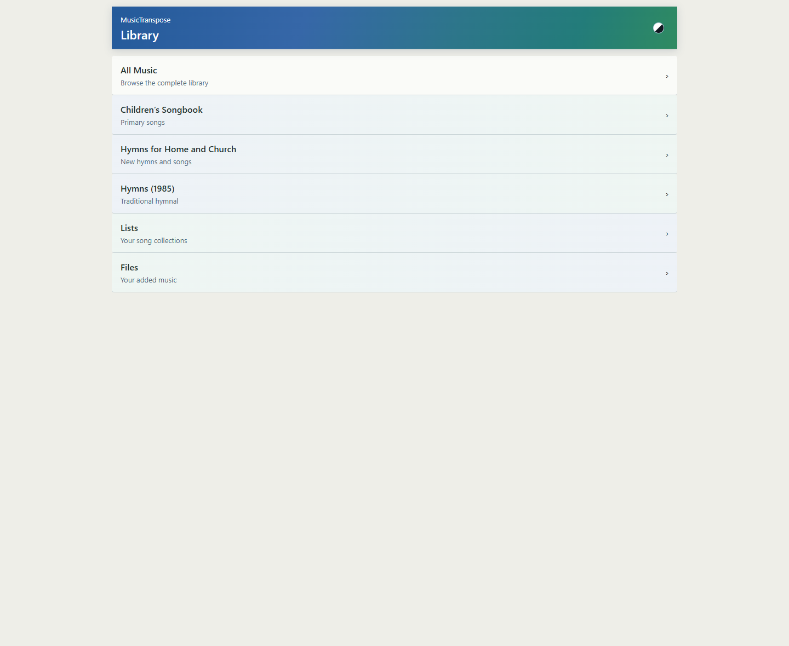
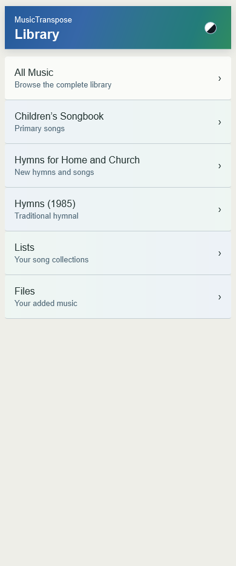
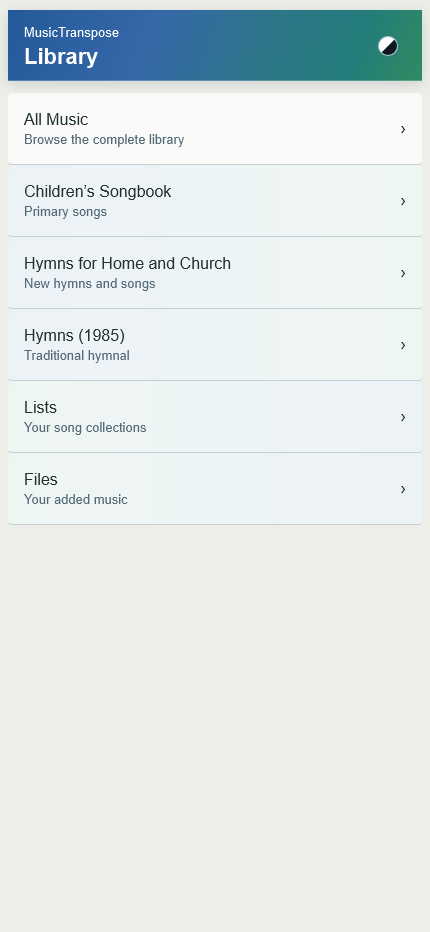
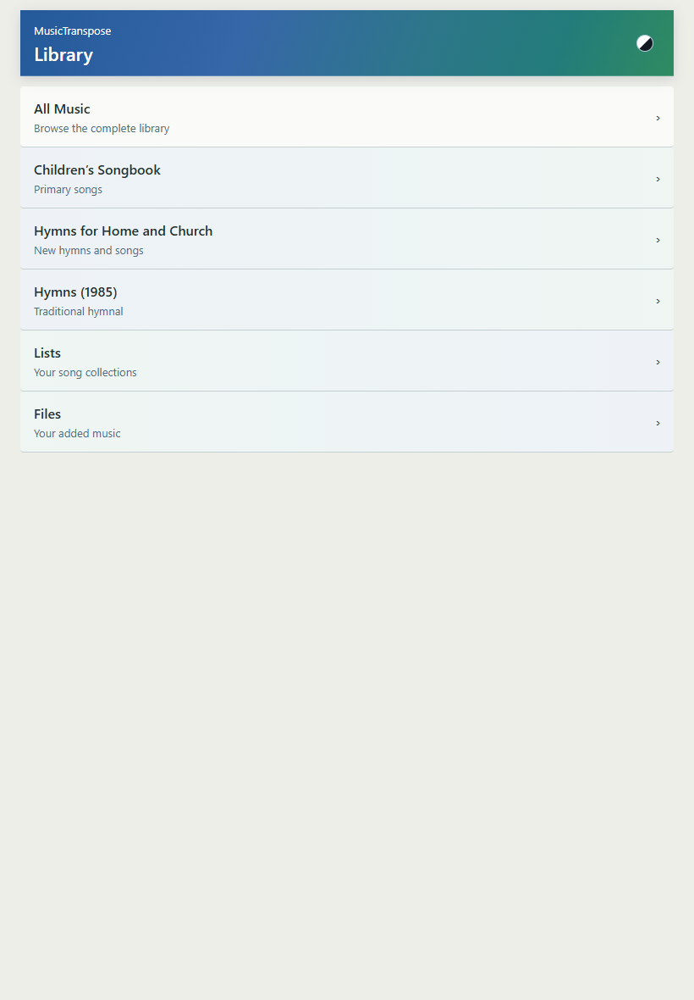
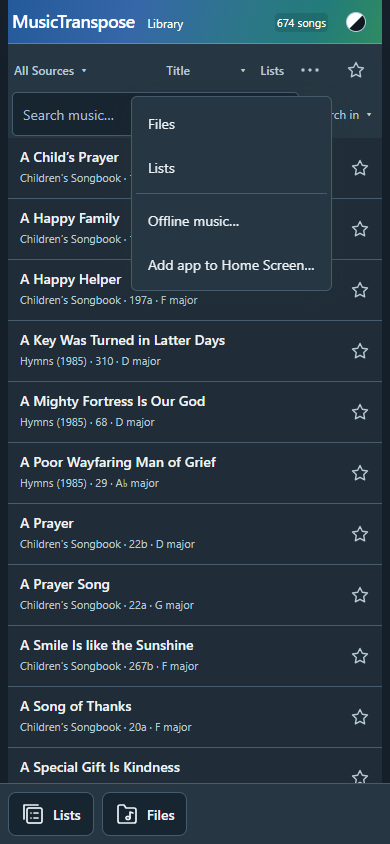
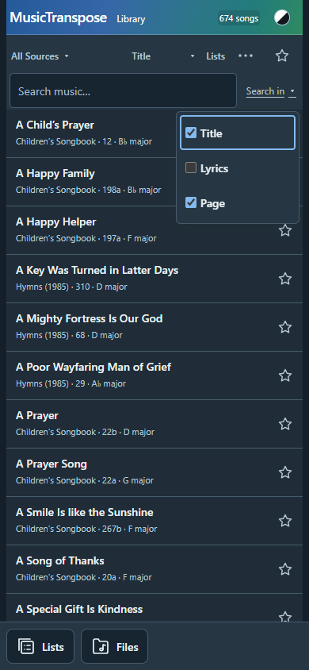
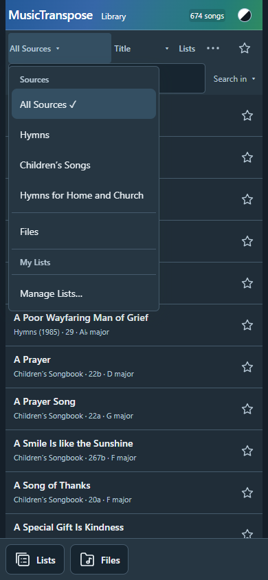
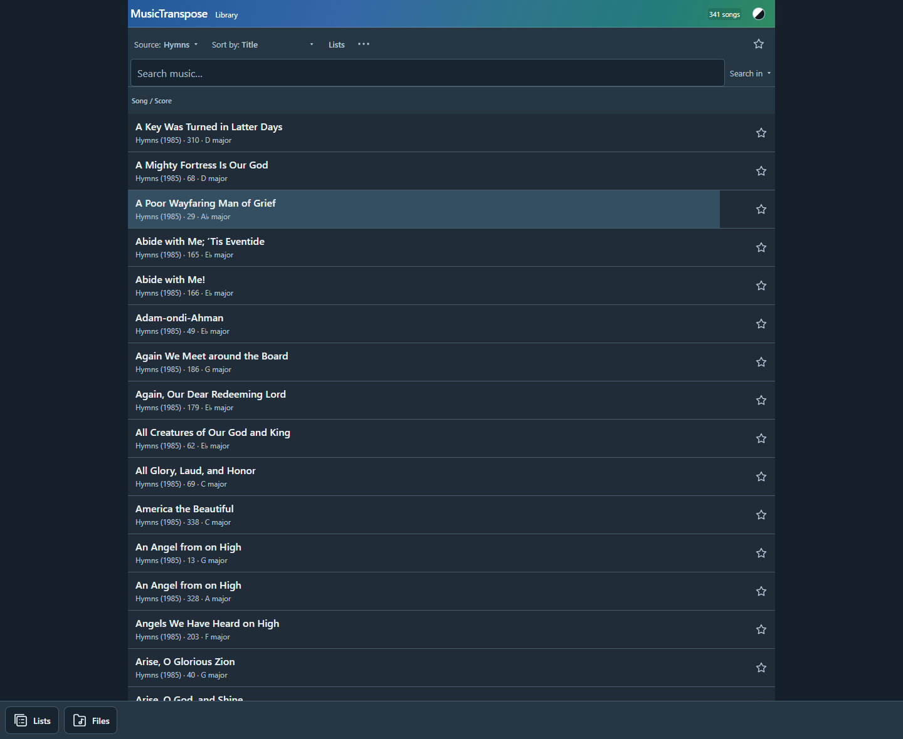
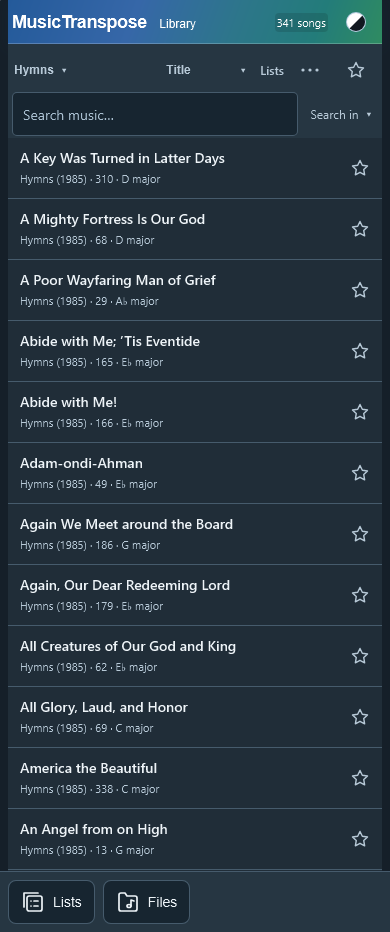
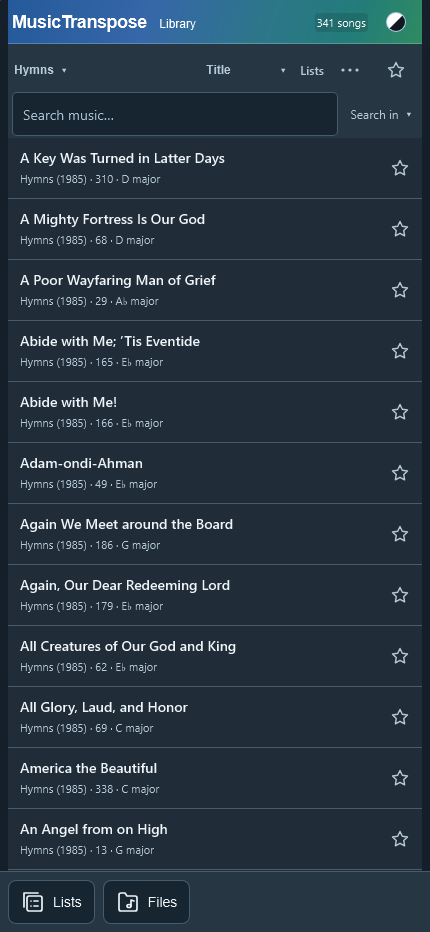
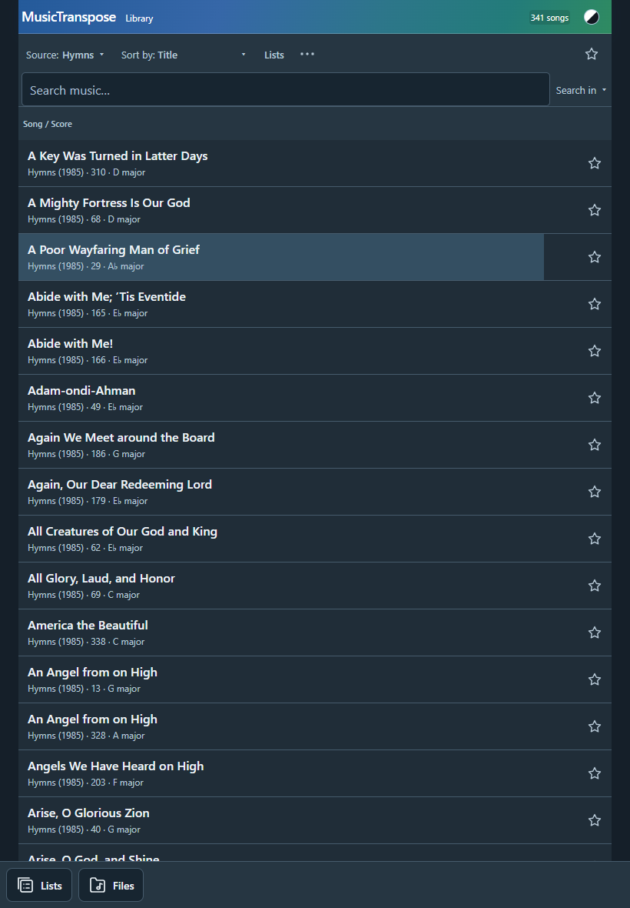
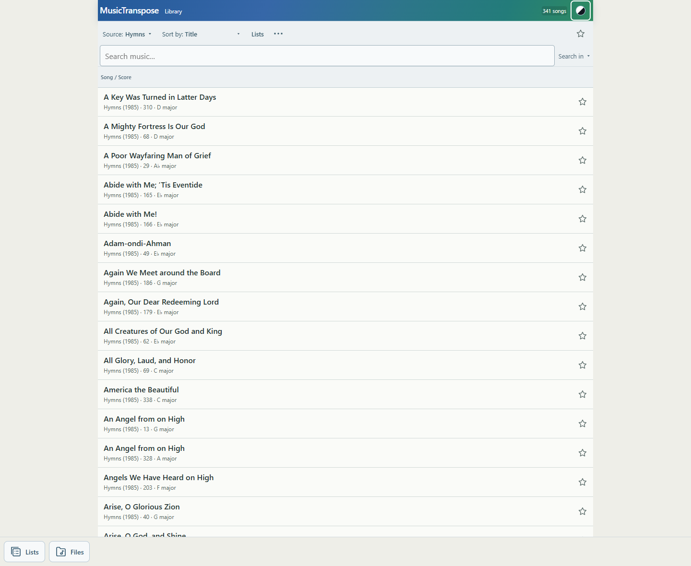
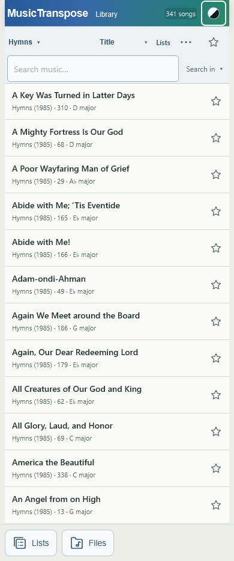
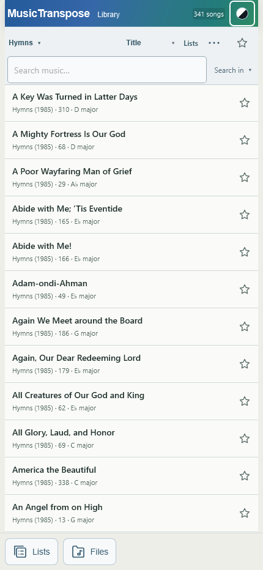
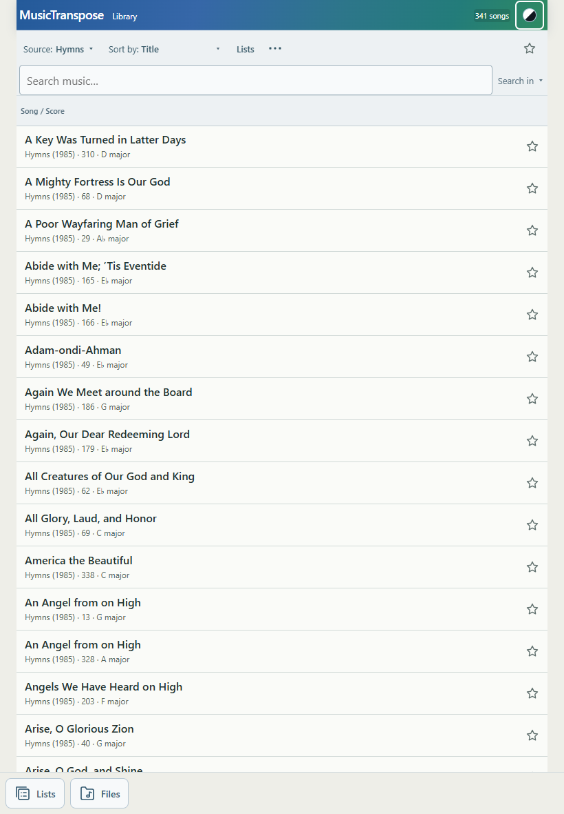